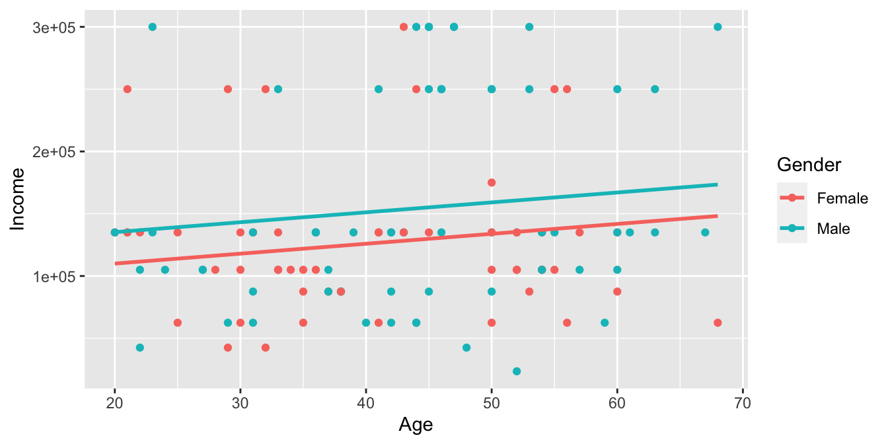
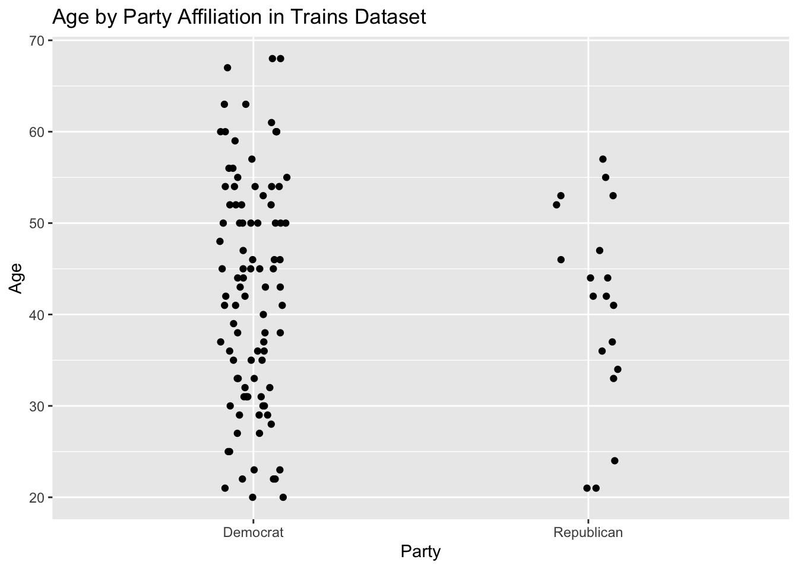
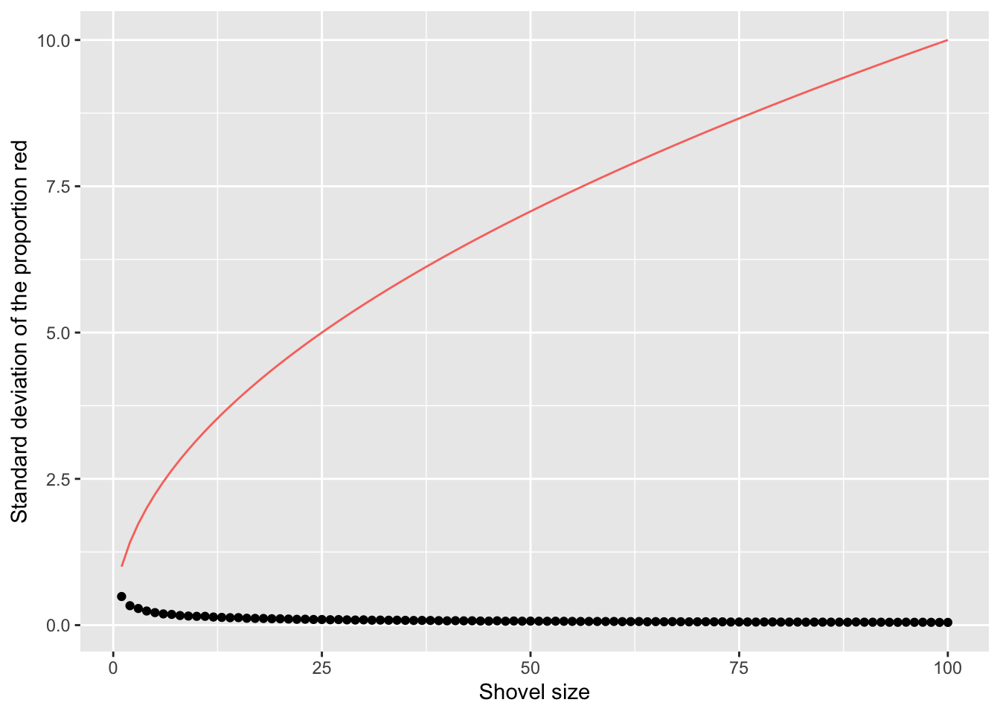
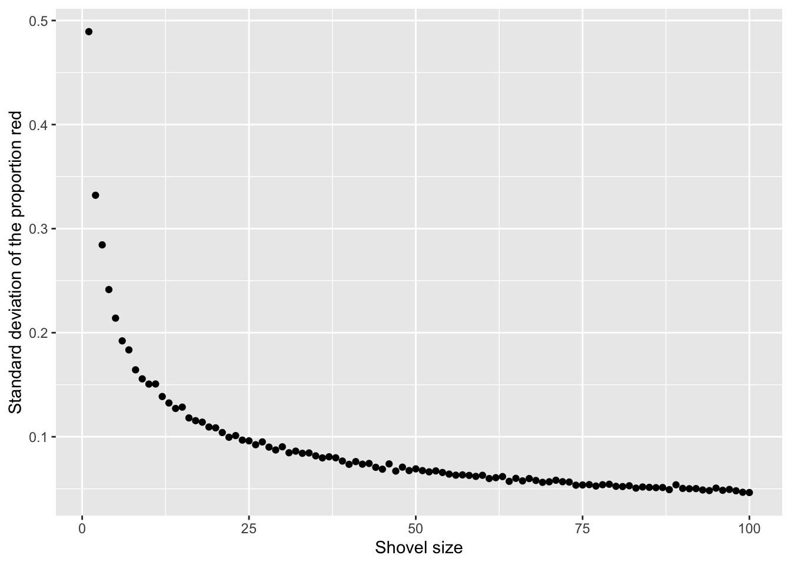
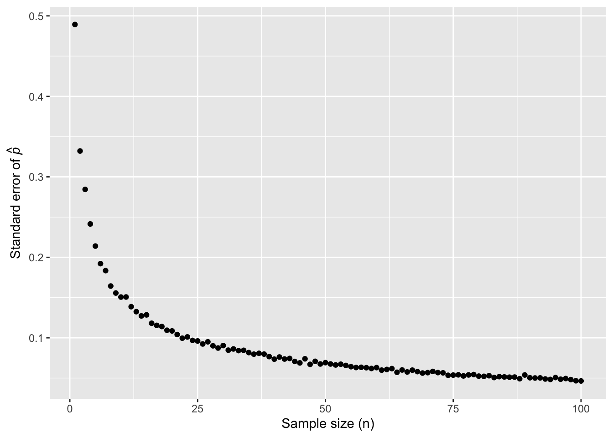

Chapter 6 One Parameter
FIGURE 6.1: Mr. DeVito is correct: sampling is badass. Let’s get started!

Last chapter, we learned about probability, the act of quantifying uncertainty. This chapter, we will learn about sampling, the beginning of our journey toward inference. When we sample, we take a portion of a total population and attempt to draw a conclusion about the portion that is generalizable to the total population.
When we see a headline of the approval rating of a politician, we are not being given a number that represents the approval rating of every citizen in the total population. We are looking at an inference based on a much smaller sample of people. If the source is reputable, this sample mirrors the real world as closely as possible. That being said, there will be variation in the reported approval rating depending on the specific sample taken that day. This is why we see different approval ratings from different news sources.
Despite this variation, we normally see estimates that are in the same ballpark. It would be surprising to see two approval ratings that are more than 10% apart on any given day. It is possible, however! There could be a number of reasons for such a large gap, many of which result from errors in the sampling itself. It could also just be a consequence of sampling variation.
Because we cannot conduct polling, let’s look instead at an easier scenario. Observe the urn in Figure 6.1. It has a certain number of red and a certain number of white beads all of equal size. It appears the urn has been mixed beforehand, as there does not seem to be any coherent pattern to the spatial distribution of the red and white beads.
Let’s now ask ourselves, what proportion of this urn’s beads are red?
FIGURE 6.2: An urn with red and white beads.

One way to answer this question would be to perform an exhaustive count: remove each bead individually, count the number of red beads and the number of white beads, and divide the number of red beads by the total number of beads. However, this would be a long and tedious process. Therefore, we will use sampling!
Our final question, once we have mastered sampling, will be: what are the odds that, with a shovel of size 50, we pull out 40 red beads?
As always, we will need the tidyverse package. The infer package has a handy function, rep_sample_n(), for simulating the process of sampling.
6.1 Real sampling activity
FIGURE 6.3: An urn with red and white beads.
6.1.1 Using the shovel method once
Instead of performing an exhaustive count, let’s insert a shovel into the urn as seen in Figure 6.2. Using the shovel, let’s remove \(5 \cdot 10 = 50\) beads, as seen in Figure 6.3. Here, we are taking a sample of the total population of beads.
FIGURE 6.4: Inserting a shovel into the urn.

FIGURE 6.5: Removing 50 beads from the urn.

Observe that 17 of the 50 sampled beads are red and thus 17/50 = 0.34 = 34% of the shovel’s beads are red. We can view the proportion of beads that are red in this shovel as a guess of the proportion of beads that are red in the entire urn. While not as exact as doing an exhaustive count of all the beads in the urn, our guess of 34% took much less time and energy to make.
However, say, we started this activity over from the beginning, replacing the 50 beads back into the urn and starting over. Would we remove exactly 17 red beads? Maybe?
What if we repeated this activity many times? Would our guess at the proportion of the urn’s beads that are red be exactly 34% every time? Surely not.
The true proportion of red beads in the urn is our estimand, the thing we want to know. Here, we are taking a sample and inferring the estimand from that sample. To give us the best odds of inferring the estimand, let’s repeat this exercise with the help of 33 groups of friends to understand how the value differs with repetition.
6.1.2 Using the shovel 33 times
Each of our 33 groups of friends will do the following:
- Use the shovel to remove 50 beads each.
- Count the number of red beads and compute the proportion of the 50 beads that are red.
- Return the beads into the urn.
- Mix the contents of the urn to not let a previous group’s results influence the next group’s.
FIGURE 6.6: Repeating sampling activity 33 times.


Each of our 33 groups of friends make note of their proportion of red beads from their sample collected. Each group then marks their proportion of their 50 beads that were red in the appropriate bin in a hand-drawn histogram as seen below.
FIGURE 6.7: Constructing a histogram of proportions.

Recall from Section ?? that histograms allow us to visualize the distribution of a numerical variable. In particular, where the center of the values falls and how the values vary. A partially completed histogram of the first 10 out of 33 groups of friends’ results can be seen in the figure below.
FIGURE 6.8: Hand-drawn histogram of first 10 out of 33 proportions.

Observe the following details in the histogram:
- At the low end, one group removed 50 beads from the urn with proportion red between 0.20 and 0.25.
- At the high end, another group removed 50 beads from the urn with proportion between 0.45 and 0.5 red.
- However, the most frequently occurring proportions were between 0.30 and 0.35 red, right in the middle of the distribution.
- The shape of this distribution is somewhat bell-shaped.
Tactile_sample_urn saves the results from our 33 groups of friends.
## # A tibble: 33 x 4
## group red_beads prop_red replicate
## <chr> <dbl> <dbl> <int>
## 1 Mal, Francis 17 0.34 1
## 2 Nam, Joshua 19 0.38 2
## 3 Mark, Ramses 21 0.42 3
## 4 Maeve, Josh 18 0.36 4
## 5 Morgan, Emily 21 0.42 5
## 6 Ace, Chris 18 0.36 6
## 7 Mia, James 15 0.3 7
## 8 Griffin, Mary 18 0.36 8
## 9 Yuki, Harry 21 0.42 9
## 10 Frank, Clara 21 0.42 10
## # … with 23 more rowsObserve for each group that we have their names, the number of red_beads they obtained, and the corresponding proportion out of 50 beads that were red named prop_red. We also have a replicate variable enumerating each of the 33 groups. We chose this name because each row can be viewed as one instance of a replicated activity: using the shovel to remove 50 beads and computing the proportion of those beads that are red.
Let’s visualize the distribution of these 33 proportions using geom_histogram() with binwidth = 0.05 in Figure 6.7. This is a computerized and complete version of the partially completed hand-drawn histogram you saw earier.
Note that setting boundary = 0.4 indicates that we want a binning scheme such that one of the bins’ boundary is at 0.4. The other comment, color = ‘white’, is modifying the color of the boundary for visual clarity. This helps us to more closely align this histogram with the hand-drawn histogram.
tactile_sample_urn %>%
ggplot(aes(x = prop_red)) +
geom_histogram(binwidth = 0.05, boundary = 0.4, color = "white") +
labs(x = "Proportion of 50 beads that were red",
title = "Distribution of 33 proportions red") FIGURE 6.9: Distribution of 33 proportions based on 33 samples of size 50.

6.1.3 What did we just do?
What we just demonstrated in this activity is the statistical concept of sampling. We want to know the proportion of the urn’s beads that are red. Performing an exhaustive count of the red and white beads would be time-consuming. Therefore, we extracted a sample of 50 beads using the shovel. Using this sample of 50 beads, we estimated the proportion of the urn’s beads that are red to be 34%.
Moreover, because we mixed the beads before each use of the shovel, the samples were randomly drawn. Because each sample was drawn at random, the samples were different from each other. Because the samples were different from each other, we obtained the different proportions red observed in the previous histogram. This is known as the concept of sampling variation.
The purpose of this sampling activity is to develop an understanding of two key concepts relating to sampling:
- Understanding the effect of sampling variation.
- Understanding the effect of sample size on sampling variation.
In Section 6.2, we’ll mimic the hands-on sampling activity we just performed on a computer. This will allow us not only to repeat the sampling exercise much more than 33 times, but it will also allow us to use shovels with different numbers of slots than just 50.
Afterwards, we’ll present you with definitions, terminology, and notation related to sampling in Section 6.3. As in many disciplines, such necessary background knowledge may seem confusing at first. However, as with many difficult topics, if you truly understand the underlying concepts and practice, you’ll be able to master them.
To tie the contents of this chapter to the real world, we’ll present an example of one of the most common uses of sampling: polls. In Section 6.4 we’ll look at a particular case study: a 2013 poll on then U.S. President Barack Obama’s popularity among young Americans, conducted by Kennedy School’s Institute of Politics at Harvard University. To close this chapter, we’ll generalize the “sampling from a urn” exercise to other sampling scenarios.
6.2 Virtual sampling
In the previous Section 6.1, we performed a tactile sampling activity. In other words, we used a physical urn of beads and a physical shovel. We performed this sampling activity by hand so that we could develop a firm understanding of the root ideas behind sampling. In this section, we’ll mimic this tactile sampling activity with a virtual sampling activity using a computer. Here, we’ll use a virtual analog to the urn of beads and a virtual analog to the shovel.
6.2.1 Using the virtual shovel once
Let’s start by performing the virtual analog of the tactile sampling exercise we performed in Section 6.1. We first need a virtual analog of the urn seen in the beginning of our chapter. To this end, we creat a data frame named urn. The rows of urn correspond exactly with the contents of the actual urn.
For reference, sample-frac() merely re-arranges the rows of the tibble. We use set.seed() to ensure that the beads in our virtual urn are always in the same order. This makes certain that the figures in the book match their written descriptions.
set.seed(9)
urn <- tibble(color = c(rep("red", 900), rep("white", 1500))) %>%
sample_frac() %>%
mutate(ID = 1:2400) %>%
select(ID, color)
urn ## # A tibble: 2,400 x 2
## ID color
## <int> <chr>
## 1 1 white
## 2 2 white
## 3 3 white
## 4 4 white
## 5 5 red
## 6 6 red
## 7 7 white
## 8 8 red
## 9 9 red
## 10 10 red
## # … with 2,390 more rowsObserve that urn has 2400 rows, telling us that the urn contains 2400 equally sized beads. The first variable ID is used as an identification variable; none of the beads in the actual urn are marked with numbers. The second variable color indicates whether a particular virtual bead is red or white. View the contents of the urn in RStudio’s data viewer and scroll through the contents to convince yourself that urn is indeed a virtual analog of the actual urn.
Now that we have a virtual analog of our urn, we need a virtual analog of the shovel seen in Figure 6.2 to generate virtual samples of 50 beads. We’re going to use the rep_sample_n() function included in the infer package. This function allows us to take repeated, or replicated, samples of size n.
Now, let’s use rep_sample_n() to take a sample of 50 beads (denoted by size = 50) from our virtual urn.
## # A tibble: 50 x 3
## # Groups: replicate [1]
## replicate ID color
## <int> <int> <chr>
## 1 1 1511 white
## 2 1 1444 white
## 3 1 1988 red
## 4 1 1152 white
## 5 1 716 white
## 6 1 667 red
## 7 1 773 red
## 8 1 91 white
## 9 1 896 red
## 10 1 2104 white
## # … with 40 more rowsObserve that virtual_shovel has 50 rows corresponding to our virtual sample of size 50. The ID variable identifies which of the 2400 beads from urn are included in our sample of 50 beads while color denotes its color. However, what does the replicate variable indicate? In virtual_shovel’s case, replicate is equal to 1 for all 50 rows. This is telling us that these 50 rows correspond to the first repeated/replicated use of the shovel, in our case our first sample. We’ll see shortly that when we “virtually” take 33 samples, replicate will take values between 1 and 33.
Let’s compute the proportion of beads in our virtual sample that are red using the dplyr data wrangling verbs you learned in Chapter 2. First, for each of our 50 sampled beads, let’s identify if it is red or not using a test for equality with ==. Let’s create a new Boolean variable is_red using the mutate() function from Section 1.4.6:
## # A tibble: 50 x 4
## # Groups: replicate [1]
## replicate ID color is_red
## <int> <int> <chr> <lgl>
## 1 1 1511 white FALSE
## 2 1 1444 white FALSE
## 3 1 1988 red TRUE
## 4 1 1152 white FALSE
## 5 1 716 white FALSE
## 6 1 667 red TRUE
## 7 1 773 red TRUE
## 8 1 91 white FALSE
## 9 1 896 red TRUE
## 10 1 2104 white FALSE
## # … with 40 more rowsObserve that for every row where color == "red", the Boolean (logical) value TRUE is returned and for every row where color is not equal to "red", the Boolean FALSE is returned.
Second, let’s compute the number of beads out of 50 that are red using the summarize() function. Recall from Section 1.4.7 that summarize() takes a data frame with many rows and returns a data frame with a single row containing summary statistics, like the mean() or median(). In this case, we use the sum():
The .groups = drop_last command is summarize’s default behavior. However, if you do not specify the .groups argument, an error message occurs. This is why it is included here.
virtual_shovel %>%
mutate(is_red = (color == "red")) %>%
summarize(num_red = sum(is_red), .groups = 'drop_last')## # A tibble: 1 x 2
## replicate num_red
## <int> <int>
## 1 1 12Why does this work? Because R treats TRUE like the number 1 and FALSE like the number 0. So summing the number of TRUEs and FALSEs is equivalent to summing 1’s and 0’s. In the end, this operation counts the number of beads where color is red. In our case, 12 of the 50 beads were red. However, you might have gotten a different number red because of the randomness of the virtual sampling.
Third and lastly, let’s compute the proportion of the 50 sampled beads that are red by dividing num_red by 50:
virtual_shovel %>%
mutate(is_red = color == "red") %>%
summarize(num_red = sum(is_red), .groups = 'drop_last') %>%
mutate(prop_red = num_red / 50)## # A tibble: 1 x 3
## replicate num_red prop_red
## <int> <int> <dbl>
## 1 1 12 0.24In other words, 24% of this virtual sample’s beads were red. Let’s make this code a little more compact and succinct by combining the first mutate() and the summarize() as follows:
virtual_shovel %>%
summarize(num_red = sum(color == "red"), .groups = 'drop_last') %>%
mutate(prop_red = num_red / 50)## # A tibble: 1 x 3
## replicate num_red prop_red
## <int> <int> <dbl>
## 1 1 12 0.24Great! 24% of virtual_shovel’s 50 beads were red! So based on this particular sample of 50 beads, our guess at the proportion of the urn’s beads that are red is 24%. But remember from our earlier tactile sampling activity that if we repeat this sampling, we will not necessarily obtain the same value of 24% again. There will likely be some variation. In fact, our 33 groups of friends computed 33 such proportions whose distribution we previously visualized. We saw that these estimates varied. Let’s now perform the virtual analog of having 33 groups of students use the sampling shovel!
6.2.2 Using the virtual shovel 33 times
In our tactile sampling exercise in Section 6.1, we had 33 groups of students use the shovel, yielding 33 samples of size 50 beads. We then used these 33 samples to compute 33 proportions. We can perform this repeated/replicated sampling virtually by once again using our virtual shovel function rep_sample_n(), adding the reps = 33 argument. This is telling R that we want to repeat the sampling 33 times.
We’ll save these results in a data frame called virtual_samples.
## # A tibble: 1,650 x 3
## # Groups: replicate [33]
## replicate ID color
## <int> <int> <chr>
## 1 1 1042 red
## 2 1 265 red
## 3 1 1079 white
## 4 1 2143 white
## 5 1 2347 white
## 6 1 2005 white
## 7 1 1912 white
## 8 1 1068 white
## 9 1 2322 red
## 10 1 1241 white
## # … with 1,640 more rowsObserve that the first 50 rows of replicate are equal to 1 while the next 50 rows of replicate are equal to 2. This is telling us that the first 50 rows correspond to the first sample of 50 beads while the next 50 rows correspond to the second sample of 50 beads. This pattern continues for all reps = 33 replicates and thus virtual_samples has 33 \(\cdot\) 50 = 1650 rows.
Let’s now take virtual_samples and compute the resulting 33 proportions red. We’ll use the same dplyr verbs as before, but this time with an additional group_by() of the replicate variable. Recall that by assigning the grouping variable “meta-data” before we summarize(), we’ll obtain 33 different proportions red. We display a preview of the first 10 out of 33 rows:
virtual_prop_red <- virtual_samples %>%
group_by(replicate) %>%
summarize(red = sum(color == "red"), .groups = 'drop_last') %>%
mutate(prop_red = red / 50)
virtual_prop_red## # A tibble: 33 x 3
## replicate red prop_red
## <int> <int> <dbl>
## 1 1 17 0.34
## 2 2 22 0.44
## 3 3 20 0.4
## 4 4 18 0.36
## 5 5 15 0.3
## 6 6 16 0.32
## 7 7 25 0.5
## 8 8 22 0.44
## 9 9 21 0.42
## 10 10 19 0.38
## # … with 23 more rowsAs with our 33 groups of friends’ tactile samples, there is variation in the resulting 33 virtual proportions red. Let’s visualize this variation in a histogram in Figure 6.8.
Note that we add ‘binwidth = 0.05’ and ‘boundary = 0.4’ arguments as well. Recall that setting ‘boundary = 0.4’ ensures a binning scheme with one of the bins’ boundaries at 0.4. Since the ‘binwidth = 0.05’ is also set, this will create bins with boundaries at 0.30, 0.35, 0.45, 0.5, etc. as well.
ggplot(virtual_prop_red, aes(x = prop_red)) +
geom_histogram(binwidth = 0.05, boundary = 0.4, color = "white") +
labs(x = "Proportion of 50 beads that were red",
title = "Distribution of 33 proportions red") FIGURE 6.10: Distribution of 33 proportions based on 33 samples of size 50.

Observe that we occasionally obtained proportions red that are less than 30%. On the other hand, we occasionally obtained proportions that are greater than 45%. However, the most frequently occurring proportions were between 35% and 40% (for 11 out of 33 samples). Why do we have these differences in proportions red? Because of sampling variation.
Let’s now compare our virtual results with our tactile results from the previous section. Observe that both histograms are somewhat similar in their center and variation, although not identical. These slight differences are again due to random sampling variation. Furthermore, observe that both distributions are somewhat bell-shaped.
FIGURE 6.11: Comparing 33 virtual and 33 tactile proportions red.

6.2.3 Using the virtual shovel 1,000 times
 FIGURE 6.12: So much sampling, so little time.
FIGURE 6.12: So much sampling, so little time.
Now say we want to study the effects of sampling variation not for 33 samples, but for a larger number of samples (1000). We have two choices at this point. We could have our groups of friends manually take 1,000 samples of 50 beads and compute the corresponding 1,000 proportions. However, this would be time-consuming. This is where computers excel: automating long and repetitive tasks while performing them quickly. At this point, we will abandon tactile sampling in favor of virtual sampling. Let’s once again use the rep_sample_n() function with sample size set to be 50 once again, but this time with the number of replicates reps set to 1000. Be sure to scroll through the contents of virtual_samples in RStudio’s viewer.
## # A tibble: 50,000 x 3
## # Groups: replicate [1,000]
## replicate ID color
## <int> <int> <chr>
## 1 1 627 white
## 2 1 824 white
## 3 1 1906 red
## 4 1 344 white
## 5 1 1598 red
## 6 1 1869 white
## 7 1 934 red
## 8 1 39 red
## 9 1 696 white
## 10 1 13 white
## # … with 49,990 more rowsObserve that now virtual_samples has 1,000 \(\cdot\) 50 = 50,000 rows, instead of the 33 \(\cdot\) 50 = 1650 rows from earlier. Using the same data wrangling code as earlier, let’s take the data frame virtual_samples with 1,000 \(\cdot\) 50 = 50,000 rows and compute the resulting 1,000 proportions of red beads.
virtual_prop_red <- virtual_samples %>%
group_by(replicate) %>%
summarize(red = sum(color == "red"), .groups = 'drop_last') %>%
mutate(prop_red = red / 50)
virtual_prop_red## # A tibble: 1,000 x 3
## replicate red prop_red
## <int> <int> <dbl>
## 1 1 21 0.42
## 2 2 18 0.36
## 3 3 19 0.38
## 4 4 19 0.38
## 5 5 16 0.32
## 6 6 19 0.38
## 7 7 21 0.42
## 8 8 16 0.32
## 9 9 19 0.38
## 10 10 22 0.44
## # … with 990 more rowsObserve that we now have 1,000 replicates of prop_red, the proportion of 50 beads that are red. Using the same code as earlier, let’s now visualize the distribution of these 1,000 replicates of prop_red in a histogram in Figure 6.10.
ggplot(virtual_prop_red, aes(x = prop_red)) +
geom_histogram(binwidth = 0.05, boundary = 0.4, color = "white") +
labs(x = "Proportion of 50 beads that were red",
title = "Distribution of 1,000 proportions red") FIGURE 6.13: Distribution of 1,000 proportions based on 1,000 samples of size 50.
Once again, the most frequently occurring proportions of red beads occur between 35% and 40%. Every now and then, we obtain proportions as low as between 20% and 25%, and others as high as between 55% and 60%. These are rare, however. Furthermore, observe that we now have a much more symmetric and smoother bell-shaped distribution. This distribution is, in fact, approximated well by a normal distribution.
6.2.4 The effect of different shovel sizes
Instead of just one shovel, imagine we have three choices of shovels to extract a sample of beads with: shovels of size 25, 50, and 100.
If our goal is to estimate the proportion of the urn’s beads that are red, which shovel would we choose?
Using our newly developed tools for virtual sampling, let’s unpack the effect of having different sample sizes! In other words, let’s use rep_sample_n() with size set to 25, 50, and 100, respectively, while keeping the number of repeated/replicated samples at 1,000:
- Virtually use the appropriate shovel to generate 1,000 samples with
sizebeads. - Compute the resulting 1,000 replicates of the proportion of the shovel’s beads that are red.
- Visualize the distribution of these 1,000 proportions red using a histogram.
Start by virtually using the shovel 1000 times with rep_sample_n. Then, compute the resulting 1000 replicates of proportion red. Finally, plot the distribution using a histogram.
virtual_samples_25 <- urn %>%
rep_sample_n(size = 25, reps = 1000)
virtual_prop_red_25 <- virtual_samples_25 %>%
group_by(replicate) %>%
summarize(red = sum(color == "red"), .groups = 'drop_last') %>%
mutate(prop_red = red / 25)
virtual_prop_red_25 %>%
ggplot(aes(x = prop_red)) +
geom_histogram(binwidth = 0.05, boundary = 0.4, color = "white") +
labs(x = "Proportion of 25 beads that were red", title = "25") We will repeat this process with a shovel size of 50.
virtual_samples_50 <- urn %>%
rep_sample_n(size = 50, reps = 1000)
virtual_prop_red_50 <- virtual_samples_50 %>%
group_by(replicate) %>%
summarize(red = sum(color == "red"), .groups = 'drop_last') %>%
mutate(prop_red = red / 50)
virtual_prop_red_50 %>%
ggplot(aes(x = prop_red)) +
geom_histogram(binwidth = 0.05, boundary = 0.4, color = "white") +
labs(x = "Proportion of 50 beads that were red", title = "50") Finally, we will perform the same process with 1000 replicates to map the histogram using a shovel size of 100.
virtual_samples_100 <- urn %>%
rep_sample_n(size = 100, reps = 1000)
virtual_prop_red_100 <- virtual_samples_100 %>%
group_by(replicate) %>%
summarize(red = sum(color == "red"), .groups = 'drop_last') %>%
mutate(prop_red = red / 100)
virtual_prop_red_100 %>%
ggplot(aes(x = prop_red)) +
geom_histogram(binwidth = 0.05, boundary = 0.4, color = "white") +
labs(x = "Proportion of 100 beads that were red", title = "100") For easy comparison, we present the three resulting histograms in a single row with matching x and y axes in Figure 6.12.
FIGURE 6.14: Comparing the distributions of proportion red for different sample sizes.
Observe that as the sample size increases, the variation of the 1,000 replicates of the proportion of red decreases. In other words, as the sample size increases, there are fewer differences due to sampling variation and the distribution centers more tightly around the same value. Eyebeading Figure 6.12, all three histograms appear to center around roughly 40%.
We can be numerically explicit about the amount of variation in our three sets of 1,000 values of prop_red using the standard deviation. A standard deviation is a summary statistic that measures the amount of variation within a numerical variable. For all three sample sizes, let’s compute the standard deviation of the 1,000 proportions red by running the following data wrangling code that uses the sd() summary function.
virtual_prop_red_25 %>%
summarize(sd = sd(prop_red), .groups = 'drop_last')
virtual_prop_red_50 %>%
summarize(sd = sd(prop_red), .groups = 'drop_last')
virtual_prop_red_100 %>%
summarize(sd = sd(prop_red), .groups = 'drop_last')| Comparing standard deviations of proportions red for three different shovels | |
|---|---|
| Number of slots in shovel | Standard deviation of proportions red |
| 25 | 0.096 |
| 50 | 0.067 |
| 100 | 0.046 |
As we observed earlier, as the sample size increases, the variation decreases. In other words, there is less variation in the 1,000 values of the proportion red. So as the sample size increases, our guesses at the true proportion of the urn’s beads that are red get more precise. Therefore, the larger the shovel, the more precise the result!
6.2.5 Functions are your friend!
Note that in the last section, we ran more or less the same code three times, but with different sizes for our shovel (25, 50, and 100). Whenever you find yourself writing the same code three or more times, you should write a function that does the same thing. Let’s look at the code that used a shovel of size 25 and calculated the proportion of beads that were red one more time:
virtual_samples_25 <- urn %>%
rep_sample_n(size = 25, reps = 1000)
virtual_prop_red_25 <- virtual_samples_25 %>%
group_by(replicate) %>%
summarize(red = sum(color == "red"), .groups = 'drop_last') %>%
mutate(prop_red = red / 25)We will break this into two functions, one called use_shovel() which will use a shovel of the specified size, and another called prop_red() which will calculate the proportion of red for a shovel of the specified size.
First, let’s create use_shovel().
use_shovel <- function(x, size, reps) {
x %>% rep_sample_n(size = size, reps = reps)
}
use_shovel(x = urn, size = 25, reps = 1000)## # A tibble: 25,000 x 3
## # Groups: replicate [1,000]
## replicate ID color
## <int> <int> <chr>
## 1 1 1660 white
## 2 1 2335 red
## 3 1 1735 white
## 4 1 158 white
## 5 1 40 red
## 6 1 255 red
## 7 1 54 red
## 8 1 1584 white
## 9 1 106 white
## 10 1 1885 red
## # … with 24,990 more rowsWe can now create the object virtual_samples_25 with the code virtual_samples_25 <- use_shovel(x = urn, size = 25, reps = 1000). This is far more succinct than our previous code, and it allows us to use a shovel of any size we’d like.
 FIGURE 6.15: That’s right! Functions can be passed into more functions. How fun.
FIGURE 6.15: That’s right! Functions can be passed into more functions. How fun.
Now, we can use our use_shovel() function to develop another function, prop_red():
prop_red <- function(x, size, reps) {
use_shovel(x = x, size = size, reps = reps) %>%
group_by(replicate) %>%
summarize(red = sum(color == "red"), .groups = 'drop_last') %>%
mutate(prop_red = red / size)
}
prop_red(x = urn, size = 25, reps = 1000)## # A tibble: 1,000 x 3
## replicate red prop_red
## <int> <int> <dbl>
## 1 1 10 0.4
## 2 2 9 0.36
## 3 3 9 0.36
## 4 4 9 0.36
## 5 5 6 0.24
## 6 6 10 0.4
## 7 7 8 0.32
## 8 8 8 0.32
## 9 9 9 0.36
## 10 10 12 0.48
## # … with 990 more rowsSee how this just uses the code we had before to create virtual_prop_red_25, but generalizes it. Now we can create the same tibbles we did before, ready to plot the histograms, with only three lines of code:
virtual_prop_red_25 <- prop_red(x = urn, size = 25, reps = 1000)
virtual_prop_red_50 <- prop_red(x = urn, size = 50, reps = 1000)
virtual_prop_red_100 <- prop_red(x = urn, size = 100, reps = 1000)But this still isn’t the best way. Note that we have three objects we need to deal with, virtual_prop_red_25, virtual_prop_red_50, and virtual_prop_red_100. Instead, let’s store our results in a single tibble. How can we do this? By using map() to create a list column!
First, we’ll create a tibble called shovels that will have a variable named shovel_size with our values (25, 50, 100):
Next, we’ll create list columns called use_shovel_results and prop_red_results that are the outputs of use_shovel() and prop_red, respectively:
shovels <- shovels %>%
mutate(use_shovel_results = map(shovel_size,
~ use_shovel(x = urn,
size = .x,
reps = 1000))) %>%
mutate(prop_red_results = map(shovel_size,
~ prop_red(x = urn,
size = .x,
reps = 1000)))
glimpse(shovels)## Rows: 3
## Columns: 3
## $ shovel_size <dbl> 25, 50, 100
## $ use_shovel_results <list> [<grouped_df[25000 x 3]>, <grouped_df[50000 x 3]>…
## $ prop_red_results <list> [<tbl_df[1000 x 3]>, <tbl_df[1000 x 3]>, <tbl_df[…Adding another map_* function will let us get the standard deviations of our estimated proportions:
shovels <- shovels %>%
mutate(prop_red_sd = map_dbl(prop_red_results, ~ pull(., prop_red) %>% sd()))
glimpse(shovels)## Rows: 3
## Columns: 4
## $ shovel_size <dbl> 25, 50, 100
## $ use_shovel_results <list> [<grouped_df[25000 x 3]>, <grouped_df[50000 x 3]>…
## $ prop_red_results <list> [<tbl_df[1000 x 3]>, <tbl_df[1000 x 3]>, <tbl_df[…
## $ prop_red_sd <dbl> 0.099, 0.066, 0.046Now that we have this framework, there’s no need to limit ourselves to the sizes 25, 50, and 100. Why not try all integers from 1 to 100? We can use the same code, except we’ll now set shovel_size = 1:100 when initializing the tibble.
shovels_100 <- tibble(shovel_size = 1:100) %>%
mutate(use_shovel_results = map(shovel_size,
~ use_shovel(x = urn,
size = .x,
reps = 1000))) %>%
mutate(prop_red_results = map(shovel_size,
~ prop_red(x = urn,
size = .x,
reps = 1000))) %>%
mutate(prop_red_sd = map_dbl(prop_red_results,
~ pull(., prop_red) %>% sd()))
glimpse(shovels_100)## Rows: 100
## Columns: 4
## $ shovel_size <int> 1, 2, 3, 4, 5, 6, 7, 8, 9, 10, 11, 12, 13, 14, 15,…
## $ use_shovel_results <list> [<grouped_df[1000 x 3]>, <grouped_df[2000 x 3]>, …
## $ prop_red_results <list> [<tbl_df[1000 x 3]>, <tbl_df[1000 x 3]>, <tbl_df[…
## $ prop_red_sd <dbl> 0.485, 0.344, 0.290, 0.238, 0.218, 0.197, 0.184, 0…Now, we have the standard deviation of prop_red for all shovel sizes from 1 to 100. Let’s plot that value to see how it changes as the shovel gets larger:
shovels_100 %>%
ggplot(aes(x = shovel_size, y = prop_red_sd)) +
geom_point() +
stat_function(aes(x = 1:100, colour = "red"), fun = sqrt, show.legend = FALSE) +
labs(x = "Shovel size",
y = "Standard deviation of the proportion red")FIGURE 6.16: Comparing standard deviations of proportions red for 100 different shovels
The formula for standard error is the sample standard deviation (s) divided by the square root of the number of samples (n). This may be written as: SE = s/(√n).
 FIGURE 6.17: To any poets and philosophers confused about this: don’t worry! It won’t be on a problem set.
FIGURE 6.17: To any poets and philosophers confused about this: don’t worry! It won’t be on a problem set.
This is interesting! You may recognize that the standard deviation of the proportion red is declining at a rate proportional to the square root of the shovel size. This is something you could have discovered by finding a formula in a statistics textbook, but it’s easier to understand if you see it for yourself.
This is the power of running many analyses at once using map_* functions and list columns: before, we could tell that the standard deviation was decreasing as the shovel size increased, but when only looking at shovel sizes of 25, 50, and 100, it wasn’t clear how quickly it was decreasing.
6.3 Sampling framework
In both our tactile and our virtual sampling activities, we used sampling for the purpose of estimation. We extracted samples in order to estimate the proportion of the urn’s beads that are red. Our virtual sampling activity built up to the results comparing 1,000 proportions red based on samples of size 25, 50, and 100, and finally expanding that to all the sizes between 1 and 100. This was our first attempt at understanding two key concepts relating to sampling for estimation:
- The effect of sampling variation on our estimates.
- The effect of sample size on sampling variation.
Let’s now introduce some terminology and notation as well as statistical definitions related to sampling. You will likely want to read this section a few times. Keep in mind, however, that all of the concepts underlying these terminology, notation, and definitions tie directly to the concepts underlying our tactile and virtual sampling activities. It will simply take time and practice to master them.
6.3.1 Terminology and notation
FIGURE 6.18: Let Yoda’s wisdom dull the pain of this terminology section.

Here is a list of terminology and mathematical notation relating to sampling.
First, a population is a collection of individuals or observations we are interested in. This is also commonly denoted as a study population. We mathematically denote the population’s size using upper-case \(N\). In our sampling activities, the (study) population is the collection of \(N\) = 2400 identically sized red and white beads contained in the urn.
Second, a population parameter is a numerical summary quantity about the population that is unknown, but you wish you knew. For example, when this quantity is a mean, the population parameter of interest is the population mean. This is mathematically denoted with the Greek letter \(\mu\) pronounced “mu” (we’ll see a sampling activity involving means in the upcoming Section 7.1). In our earlier sampling from the urn activity, however, since we were interested in the proportion of the urn’s beads that were red, the population parameter is the population proportion. This is mathematically denoted with the letter \(p\).
Third, a census is an exhaustive enumeration or counting of all \(N\) individuals or observations in the population in order to compute the population parameter’s value exactly. In our sampling activity, this would correspond to counting the number of beads out of \(N\) = 2400 that are red and computing the population proportion \(p\) that are red exactly. When the number \(N\) of individuals or observations in our population is large as was the case with our urn, a census can be quite expensive in terms of time, energy, and money.
Fourth, sampling is the act of collecting a sample from the population when we don’t have the means to perform a census. We mathematically denote the sample’s size using lower case \(n\), as opposed to upper case \(N\) which denotes the population’s size. Typically the sample size \(n\) is much smaller than the population size \(N\). Thus sampling is a cheaper alternative to performing a census. In our sampling activities, we used shovels with varying slots to extract samples of size \(n\) = 1 through \(n\) = 100.
Fifth, a point estimate (AKA sample statistic) is a summary statistic computed from a sample that estimates an unknown population parameter. In our sampling activities, recall that the unknown population parameter was the population proportion and that this is mathematically denoted with \(p\). Our point estimate is the sample proportion: the proportion of the shovel’s beads that are red. In other words, it is our guess of the proportion of the urn’s beads that are red. We mathematically denote the sample proportion using \(\hat{p}\). The “hat” on top of the \(p\) indicates that it is an estimate of the unknown population proportion \(p\).
Sixth is the idea of representative sampling. A sample is said to be a representative sample if it roughly looks like the population. In other words, are the sample’s characteristics a good representation of the population’s characteristics? In our sampling activity, are the samples of \(n\) beads extracted using our shovels representative of the urn’s \(N\) = 2400 beads?
Seventh is the idea of generalizability. We say a sample is generalizable if any results based on the sample can generalize to the population. In our sampling activity, can we generalize the sample proportion from our shovels to the entire urn? Using our mathematical notation, this is akin to asking if \(\hat{p}\) is a “good guess” of \(p\)?
Eighth, we say biased sampling occurs if certain individuals or observations in a population have a higher chance of being included in a sample than others. We say a sampling procedure is unbiased if every observation in a population had an equal chance of being sampled. Had the red beads been much smaller than the white beads, and therefore more prone to falling through the shovel, our sample would have been biased. In our sampling activities, since we mixed all \(N = 2400\) beads prior to each group’s sampling and since each of the equally sized beads had an equal chance of being sampled, our samples were unbiased.
Ninth and lastly, the idea of random sampling. We say a sampling procedure is random if we sample randomly from the population in an unbiased fashion. In our sampling activities, this would correspond to sufficiently mixing the urn before each use of the shovel.
FIGURE 6.19: Fear not if you look like Spongebob after reading this section. We will re-cap right now!

Phew, that’s a lot of new terminology and notation to learn! Let’s put them all together to describe the paradigm of sampling.
In general:
- If the sampling of a sample of size \(n\) is done at random, then
- the sample is unbiased and representative of the population of size \(N\), thus
- any result based on the sample can generalize to the population, thus
- the point estimate is a “good guess” of the unknown population parameter, thus
- instead of performing a census, we can infer about the population using sampling.
Specific to our sampling activity:
- If we extract a sample of \(n=50\) beads at random, in other words, we mix all of the equally sized beads before using the shovel, then
- the contents of the shovel are an unbiased representation of the contents of the urn’s 2400 beads, thus
- any result based on the shovel’s beads can generalize to the urn, thus
- the sample proportion \(\hat{p}\) of the \(n=50\) beads in the shovel that are red is a “good guess” of the population proportion \(p\) of the \(N=2400\) beads that are red, thus
- instead of manually going over all 2400 beads in the urn, we can infer about the urn using the shovel.
Note that last word we wrote in bold: infer. The act of “inferring” means to deduce or conclude information from evidence and reasoning. In our sampling activities, we wanted to infer about the proportion of the urn’s beads that are red. Statistical inference is the “theory, methods, and practice of forming judgments about the parameters of a population and the reliability of statistical relationships, typically on the basis of random sampling.” In other words, statistical inference is the act of inference via sampling.
6.3.2 Statistical definitions
FIGURE 6.20: We are almost done! Hang in there.

Now, for some important statistical definitions related to sampling. As a refresher of our 1,000 repeated/replicated virtual samples of size \(n\) = 25, \(n\) = 50, and \(n\) = 100 in Section 6.2, let’s display our figure showing the difference in proportions red according to different shovel sizes.
FIGURE 6.21: Previously seen three distributions of the sample proportion \(\hat{p}\).

These types of distributions have a special name: sampling distributions; their visualization displays the effect of sampling variation on the distribution of a point estimate; in this case, the sample proportion \(\hat{p}\). Using these sampling distributions, for a given sample size \(n\), we can make statements about what values we typically expect.
For example, observe the centers of all three sampling distributions: they are all roughly centered around \(0.4 = 40\%\). Furthermore, observe that while we are somewhat likely to observe sample proportions of red beads of \(0.2 = 20\%\) when using the shovel with 25 slots, we will almost never observe a proportion of 20% when using the shovel with 100 slots. Observe also the effect of sample size on the sampling variation. As the sample size \(n\) increases from 25 to 50 to 100, the variation of the sampling distribution decreases and thus the values cluster more and more tightly around the same center of around 40%. We quantified this variation using the standard deviation of our sample proportions, seeing that the standard deviation decreases with the square root of the sample size:
FIGURE 6.22: Previously seen comparing standard deviations of proportions red for 100 different shovels
So as the sample size increases, the standard deviation of the proportion of red beads decreases. This type of standard deviation has another special name: standard error. Standard errors quantify the effect of sampling variation induced on our estimates. In other words, they quantify how much we can expect different proportions of a shovel’s beads that are red to vary from one sample to another sample to another sample, and so on. As a general rule, as sample size increases, the standard error decreases.
Unfortunately, these names confuse many people who are new to statistical inference. For example, it’s common for people who are new to statistical inference to call the “sampling distribution” the “sample distribution.” Another additional source of confusion is the name “standard deviation” and “standard error.” Remember that a standard error is merely a kind of standard deviation: the standard deviation of any point estimate from sampling. In other words, all standard errors are standard deviations, but not every standard deviation is necessarily a standard error.
To help reinforce these concepts, let’s re-display Figure 6.14 but using our new terminology, notation, and definitions relating to sampling in the figure below.
FIGURE 6.23: Three sampling distributions of the sample proportion \(\hat{p}\).

Furthermore, let’s display the graph of standard errors for \(n = 1\) to \(n = 100\) using our new terminology, notation, and definitions relating to sampling.
FIGURE 6.24: Standard errors of the sample proportion based on sample sizes of 1 to 100
Remember the key message of this last table: that as the sample size \(n\) goes up, the “typical” error of your point estimate will go down, as quantified by the standard error.
6.3.3 The moral of the story
Let’s recap this section so far. We’ve seen that if a sample is generated at random, then the resulting point estimate is a “good guess” of the true unknown population parameter. In our sampling activities, since we made sure to mix the beads first before extracting a sample with the shovel, the resulting sample proportion \(\hat{p}\) of the shovel’s beads that were red was a “good guess” of the population proportion \(p\) of the urn’s beads that were red.
However, what do we mean by our point estimate being a “good guess”? Sometimes, we’ll get an estimate that is less than the true value of the population parameter, while at other times we’ll get an estimate that is greater. This is due to sampling variation. Despite this sampling variation, our estimates will “on average” be correct and thus will be centered at the true value. This is because our sampling was done at random and thus in an unbiased fashion.
In our sampling activities, sometimes our sample proportion \(\hat{p}\) was less than the true population proportion \(p\), while at other times it was greater. This was due to the sampling variability. However, despite this sampling variation, our sample proportions \(\hat{p}\) were “on average” correct and thus were centered at the true value of the population proportion \(p\). This is because we mixed our urn before taking samples and thus the sampling was done at random and thus in an unbiased fashion. This is also known as having an accurate estimate.
What was the value of the population proportion \(p\) of the \(N\) = 2400 beads in the actual urn that were red? There were 900 red beads, for a proportion red of 900/2400 = 0.375 = 37.5%! How do we know this? Did the authors do an exhaustive count of all the beads? No! They were listed in the contents of the box that the urn came in! Hence we were able to make the contents of the virtual urn match the tactile urn:
urn %>%
summarize(sum_red = sum(color == "red"),
sum_not_red = sum(color != "red"), .groups = 'drop_last')## # A tibble: 1 x 2
## sum_red sum_not_red
## <int> <int>
## 1 900 1500Let’s re-display our sampling distributions from earlier, but now with a vertical red line marking the true population proportion \(p\) of beads that are red = 37.5% in Figure 6.19 below. We see that while there is a certain amount of error in the sample proportions \(\hat{p}\) for all three sampling distributions, on average the \(\hat{p}\) are centered at the true population proportion red \(p\).
FIGURE 6.25: Three sampling distributions with population proportion \(p\) marked by vertical line.

At this point, you might be asking yourself: “If we already knew the true proportion of the urn’s beads that are red was 37.5%, then why did we do any sampling?” You might also be asking: “Why did we take 1,000 repeated samples of various sizes (n = 1 to n = 100)? Shouldn’t we be taking only one sample that’s as large as possible?”. If you did ask yourself these questions, your suspicion is merited!
The sampling activity involving the urn is merely an idealized version of how sampling is done in real life. We performed this exercise only to study and understand:
- The effect of sampling variation.
- The effect of sample size on sampling variation.
This is not how sampling is done in real life. In a real-life scenario, we won’t know what the true value of the population parameter is. Furthermore, we wouldn’t be able to take 1,000 replicated samples. Rather, we take a single sample that’s as large as we can afford. In the next section, we’ll study a real-life example of sampling: polls.
FIGURE 6.26: Real life sampling is hard! In most scenarios, it’s impossible to ask the entire population for their opinions.

6.4 Case study: Polls
Let’s now switch gears to a more realistic sampling scenario than our urn activity: a poll. In practice, pollsters do not take 1,000 repeated samples as we did in our previous sampling activities, but rather take only a single sample that’s as large as possible.
On December 4, 2013, National Public Radio in the US reported on a poll of President Obama’s approval rating among young Americans aged 18-29 in an article, “Poll: Support For Obama Among Young Americans Eroding.” The poll was conducted by the Kennedy School’s Institute of Politics at Harvard University. A quote from the article:
After voting for him in large numbers in 2008 and 2012, young Americans are souring on President Obama.
According to a new Harvard University Institute of Politics poll, just 41 percent of millennials — adults ages 18-29 — approve of Obama’s job performance, his lowest-ever standing among the group and an 11-point drop from April. Let’s tie elements of the real-life poll in this new article with our “tactile” and “virtual” urn activity from Sections 6.1 and 6.2 using the terminology, notations, and definitions we learned in Section 6.3. You’ll see that our sampling activity with the urn is an idealized version of what pollsters are trying to do in real life.
First, who is the (Study) Population of \(N\) individuals or observations of interest?
- Urn: \(N\) = 2400 identically sized red and white beads
- Obama poll: \(N\) = ? young Americans aged 18-29
Second, what is the population parameter?
- Urn: The population proportion \(p\) of all the beads in the urn that are red.
- Obama poll: The population proportion \(p\) of all young Americans who approve of Obama’s job performance.
Third, what would a census look like?
- Urn: Manually going over all \(N\) = 2400 beads and exactly computing the population proportion \(p\) of the beads that are red.
- Obama poll: Locating all \(N\) young Americans and asking them all if they approve of Obama’s job performance. In this case, we don’t even know what the population size \(N\) is!
Fourth, how do you perform sampling to obtain a sample of size \(n\)?
- Urn: Using a shovel with \(n\) slots.
- Obama poll: One method is to get a list of phone numbers of all young Americans and pick out \(n\) phone numbers. In this poll’s case, the sample size of this poll was \(n = 2089\) young Americans.
Fifth, what is your point estimate (AKA sample statistic) of the unknown population parameter?
- Urn: The sample proportion \(\hat{p}\) of the beads in the shovel that were red.
- Obama poll: The sample proportion \(\hat{p}\) of young Americans in the sample that approve of Obama’s job performance. In this poll’s case, \(\hat{p} = 0.41 = 41\%\), the quoted percentage in the second paragraph of the article.
Sixth, is the sampling procedure representative?
- Urn: Are the contents of the shovel representative of the contents of the urn? Because we mixed the urn before sampling, we can feel confident that they are.
- Obama poll: Is the sample of \(n = 2089\) young Americans representative of all young Americans aged 18-29? This depends on whether the sampling was random.
Seventh, are the samples generalizable to the greater population?
- Urn: Is the sample proportion \(\hat{p}\) of the shovel’s beads that are red a “good guess” of the population proportion \(p\) of the urn’s beads that are red? Given that the sample was representative, the answer is yes.
- Obama poll: Is the sample proportion \(\hat{p} = 0.41\) of the sample of young Americans who supported Obama a “good guess” of the population proportion \(p\) of all young Americans who supported Obama at this time in 2013? In other words, can we confidently say that roughly 41% of all young Americans approved of Obama at the time of the poll? Again, this depends on whether the sampling was random.
Eighth, is the sampling procedure unbiased? In other words, do all observations have an equal chance of being included in the sample?
- Urn: Since each bead was equally sized and we mixed the urn before using the shovel, each bead had an equal chance of being included in a sample and hence the sampling was unbiased.
- Obama poll: Did all young Americans have an equal chance at being represented in this poll? Again, this depends on whether the sampling was random.
Ninth and lastly, was the sampling done at random?
- Urn: As long as you mixed the urn sufficiently before sampling, your samples would be random.
- Obama poll: Was the sample conducted at random? We can’t answer this question without knowing about the sampling methodology used by Kennedy School’s Institute of Politics at Harvard University. We’ll discuss this more at the end of this section.
In other words, the poll by Kennedy School’s Institute of Politics at Harvard University can be thought of as an instance of using the shovel to sample beads from the urn. Furthermore, if another polling company conducted a similar poll of young Americans at roughly the same time, they would likely get a different estimate than 41%. This is due to sampling variation.
Let’s now revisit the sampling paradigm from Subsection 6.3.1:
In general:
- If the sampling of a sample of size \(n\) is done at random, then
- the sample is unbiased and representative of the population of size \(N\), thus
- any result based on the sample can generalize to the population, thus
- the point estimate is a “good guess” of the unknown population parameter, thus
- instead of performing a census, we can infer about the population using sampling.
Specific to the urn:
- If we extract a sample of \(n = 50\) beads at random, in other words, we mix all of the equally sized beads before using the shovel, then
- the contents of the shovel are an unbiased representation of the contents of the urn’s 2400 beads, thus
- any result based on the shovel’s beads can generalize to the urn, thus
- the sample proportion \(\hat{p}\) of the \(n = 50\) beads in the shovel that are red is a “good guess” of the population proportion \(p\) of the \(N = 2400\) beads that are red, thus
- instead of manually going over all 2400 beads in the urn, we can infer about the urn using the shovel.
Specific to the Obama poll:
- If we had a way of contacting a randomly chosen sample of 2089 young Americans and polling their approval of President Obama in 2013, then
- these 2089 young Americans would be an unbiased and representative sample of all young Americans in 2013, thus
- any results based on this sample of 2089 young Americans can generalize to the entire population of all young Americans in 2013, thus
- the reported sample approval rating of 41% of these 2089 young Americans is a good guess of the true approval rating among all young Americans in 2013, thus
- instead of performing an expensive census of all young Americans in 2013, we can infer about all young Americans in 2013 using polling.
So as you can see, it was critical for the sample obtained by Kennedy School’s Institute of Politics at Harvard University to be truly random in order to infer about all young Americans’ opinions about Obama. Was their sample truly random? It’s hard to answer such questions without knowing about the sampling methodology they used.
For example, what if Kennedy School’s Institute of Politics at Harvard University conducted this poll using only mobile phone numbers? People without mobile phones would be left out and therefore not represented in the sample. This flaw is an example of censoring, the exclusion of certain datapoints due to an issue with data collection. This results in an incomplete observation and increases the prediction uncertainty of the estimand, Obama’s approval rating amount young Americans. Ensuring that our samples were random was easy to do in our sampling urn exercises; however, in a real-life situation like the Obama poll, this is much harder to do.
What you have visualized in this chapter was a demonstration of a famous theorem, or mathematically proven truth, called the Central Limit Theorem. It loosely states that when sample means are based on larger and larger sample sizes, the sampling distribution of these sample means becomes both more and more normally shaped and more and more narrow. In other words, the sampling distribution increasingly follows a normal distribution and the variation of these sampling distributions gets smaller, as quantified by their standard errors.
6.4.1 Wisdom

Recall that Wisdom, one of our key themes, encompasses two primary issues: the relevance of the estimand and the map from concept to data.
In our polling example, is the estimand (Obama’s approval rating) relevant to the research question we want to answer? If we wanted to know Obama’s approval rating and nothing else, yes. But, that’s not the case here. The aim of this poll is to draw a conclusion about a voter’s likelihood of voting for Obama in the next election using the approval rating as a predictive measure for voting behavior.
Our problem, estimating Obama’s electability in young people, is not solved by this poll. If we wanted to know the answer to this problem, we would need to change a few key aspects of the sampling.
First, not all young Americans vote! In fact, many do not. Therefore, if we wanted to draw a conclusion about Obama’s favorability among young American voters, the sample population would need to be modified to only include registered voters with the intention of voting in the next election. A sample population of random young Americans, with no question on voting behavior, tells us almost nothing about our key problem.
 FIGURE 6.27: Sampling doesn’t work if the data doesn’t map to our research question!
FIGURE 6.27: Sampling doesn’t work if the data doesn’t map to our research question!
Second, we need to change the question. The true question is not Obama’s favoribility among young Americans, but is actually: will you or will you not vote for Obama in the next election? To allow more flexibility in responses and get a range of responses that accurately refect uncertainty and likelihood, we might pose the following question: on a scale from one to ten, with one being “most definitely not” and ten being “most definitely”, how likely are you to vote for Obama in the next election?
It is extremely important, but often overlooked, that the data we are analyzing should map to the research question we are trying to answer. In our polling example, we’ve just discovered that the collected data tells us very little about what we really want to know. Both the sample population and the research question are flawed and therefore offer us very little information that is relevant to our key issue: the voting behavior of young Americans in the next election.
6.4.2 Justice

From now on, we will ignore the fact that our map from concept to data is flawed. Assume that approval rating is the only thing we want to know.
First, we must determine if we are modeling (just) for prediction or if we are (also) modeling for causation. Another way of looking at this is are we using a model for prediction or a model for explanation.
When polling on the attitude of young Americans towards Obama, we are not measuring a causal effect. When models are causal, we change the value of one input and figure out what the new output would be, thus allowing us to calculate a causal effect for a specific individual. Here, we are using the attitude of young Americans towards Obama to predict the outcome of the next election.
Let’s consider what a predictive model means in terms of our Preceptor Tables. First, know that in our actual Preceptor Table for this poll, we have the results for 2089 young Americans from a total population of young Americans that exceeds 50 million units (people). That means that, in our actual Preceptor Table, we have more than 50 million rows, with a mere 2089 rows that include an approval rating.
| ID | Approval Rating |
|---|---|
| Citizen 1 | ? |
| Citizen 2 | ? |
| ... | ... |
| Citizen 10000 | ? |
| Citizen 10001 | 31 |
| ... | ... |
| Citizen 49999999 | ? |
| Citizen 50000000 | ? |
An ideal Preceptor Table for this case would report an approval rating for every one of our 50 million rows. It quickly becomes clear, with a popuation size this large, why sampling and generalizing are essential to practical inference.
Recall that an infinite Preceptor Table gives us any information we want to know about all one of our units. Though an infinite Preceptor Table is not practial or even possible in most contexts, it’s important to consider how we decrease the size of the infinite Preceptor Table, mostly by assuming that certain rows and columns are “exchangeable”. This is where we run into the issue of realism in our polling example. This poll assumes that the columns for “approval rating of Obama” and “who-are-you-planning-to-vote-for” are interchangable. As we’ve seen, these columns aren’t analogs!
6.4.3 Courage

Our actual Preceptor Table is riddled with question marks. How do we fill them in?
There are few more important concepts in statistics and data science than the Data Generating Mechanism (DGM). Our data, the data that we collect and see, has been generated by the complexity and confusion of the world. The universes’s own mechanism has brought this data to us. Our job is to build a model of that process, to create, on the computer, a mechanism which generates fake data consistent with the data which we see. With that DGM, we can answer any question which we might have. In particular, with the DGM, we provide predictions of data we have not seen and estimates of the uncertainty associated with those predictions.
We need a “machine” which generates these predictions, which is the same thing as a machine which fills in all the question marks in the actual Preceptor Table, which is the same thing as a machine which produces “fake data” which looks a lot like our actual data.
The theme of Courage places an emphasis on two things: the code which brings the model to life and the uncertainty of real life which impacts the model’s place in the world.
What are the odds, if we bring in 10 random young Americans, that at least 2 of them support Obama?
6.4.4 Temperance
Temperance is perhaps the most important virtue in data science. Our models are never as good as they appear to be. The world is complex and, even worse, always changing. We must be aware of the unknown unknowns, concerned about how representative our data/model is to our problem, worried about the realism of our assumptions, and leery of the siren call of testing. In simpler terms, we must be humble.
FIGURE 6.28: Listen to Kendrick. If we are too confident, our assumptions about the world will be false!


What we really care about is data we haven’t seen yet, mostly data from tomorrow. But what if the world changes, as it always does? In general, the world changes some. That means that are forecasts are more uncertain that a naive use of our model might suggest.
To apply this to our poll, what would happen if, the week after the poll is conducted, America entered into war with another nation? What if there was an outbreak of a dangerous virus, spurring a global pandemic? Our poll cannot account for such events, known as unknown unknowns, as they have not happened at the time that we collected data. But our conclusions about the world a week later, after the announcement of war or the outbreak of a virus, are largely going to be wrong!
This brings us to yet another reason we must be humble with our conclusions: realism. Does the structure of the model match the world? If it does not (and it never does) then all the inferences we make will be wrong. We just hope that they won’t be too wrong.
Is asking a random sample of young Americans their approval rating of Obama going to give us enough information to predict the outcome of the next election? No! Does it give us enough information to predict the voting behavior of young Americans at that specific point in time? Sadly, also no.
The assumptions which allowed the poll to move from the infinite Preceptor Table to the ideal Preceptor Table are not plausible. Because the goal of the poll (to predict whether a young American will vote for Obama) does not match the question being asked (the approval rating of Obama among a random sample of young Americans), the model lacks the realism that allows our inferences to be applied to the real world.
That being said, even if the model had asked a better question (“How likely are you to vote for Obama in the next election?”) to a more appropriate sample (registered voters between the ages of 19 and 34), there is still too much uncertainty with the real world to assume our conclusions will be relevant the next day, the next week, or the next month.
6.4.5 Rubin Causal Model
To end this section, let’s consider how this polling scenario connects to the Rubin Causal Model (RCM).
For the most part, it doesn’t! Remember the RCM’s slogan: No causation without manipulation.
In both our urn example and the Obama poll, we are not manipulating our units (the beads and the opinions of the pollees, respectively). There are not a control and treatment condition to compare; there is no causal effect to measure. Therefore, the RCM cannot be applied to these scenarios.
6.5 Sampling Mechanism
One of the most important aspects of sampling is the sampling mechanism: the mechanism through which we sample our population. This concept is related, but distinctly different, from the assignment mechanism that we learned about in Chapter 3.
The assignment mechanism sorts units into control and experiment groups, while the sampling mechanism is the means through which we aquire our sample. Assignment mechanisms do not have a place in our urn paradigm since we are not measuring any causal relationship or assigning beads to specific groups.
To think about the sampling mechanism further: why are certain beads sampled, while others are not? Is this completely random?
In order to investigate this concept, let’s revisit our Preceptor Tables.
6.5.1 Preceptor Tables
Recall that a Preceptor Table is a table with rows and columns for all the data we would (reasonably) like to have. There are two different types of Preceptor Tables that are applicable to our urn example: actual and ideal.
FIGURE 6.29: When you see another Precetor Table section.

An actual Preceptor Table shows what we actually know. Accordingly, the table is riddled with question marks that the real world saddles us with. The ideal Preceptor Table is the Preceptor Table with no question marks, and a reasonable number of rows and columns. With an ideal Preceptor Table, there is need for inference; the estimand is a simple matter of arithmetic.
To visualize the different Preceptor Tables and their usefulness to us data scientists, let’s revisit our urn.
6.5.2 Ideal Preceptor Table: What we wish we knew
As is the case in the Rubin Causal Model, we wish we knew the values for every single unit in every possible scenario. The analogous ideal here would be a table where we know the color identity of every single bead. To compare to our previous Preceptor Table, this is what our ideal Preceptor Table would look like:
| ID | Year |
|---|---|
| 1 | white |
| 2 | white |
| ... | ... |
| 200 | white |
| 201 | white |
| 2399 | white |
| 2400 | white |
| ... | ... |
This Preceptor Table is possible by performing the exhaustive hand count of the entire urn. Let’s say that, after this tedious process, we find that the true and real proportion of red beads is exactly 37.5%. We know each bead’s color identity in the entire urn. To revisit the terminology of Chapter 5, we would be dealing with P(A|B), the probability of bead 1 being red given that we know the color_ID of every single bead in the urn. If the proportion of red beads is exactly 37.5%, we can say whether bead 1 is red or not with 100% certainty, since we know the exact number of red and white beads in the urn.
In this world, the estimand, the proportion of red beads in the urn, is a simple matter of arithmetic. However, as has been emphasized before, performing an exhaustive count is not the easiest way to estimate the proportion of red beads. Real-life sampling is far more complex. The process is extremely prone to error. Despite that, most people overestimate the validity of conclusions drawn from sampling. To stress the unknowns in sampling, let’s look at our actual Preceptor Table.
6.5.3 Actual Preceptor Table: What we know
Let’s imagine we use our shovel and sample 100 beads from the urn. After taking our sample, we find that 40% of the sampled beads are red. Let’s visualize this by looking at the entire urn after our sample in an actual Preceptor Table. We only know the colors of our randomly sampled 100 beads, the rest of the bead colors is our missing data!
Not all the rows in our actual Preceptor Table are shown, but you can imagine we have a lot of missing data with only some values filled in for the colors.
| ID | Color |
|---|---|
| 1 | ? |
| 2 | ? |
| ... | ... |
| ... | ... |
| 200 | white |
| 201 | ? |
| ... | ... |
| ... | ... |
| 2399 | red |
| 2400 | ? |
Where is all of our data? Well, when we took a sample of 100 beads from the total urn, we only have color identifications for 100 of the total 2400 beads in the urn. The rest of the beads were not sampled and we cannot say for certain whether they are white or red.
Something else we must consider is why some beads do get sampled, while others do not. This is a consequence of the sampling mechanism. Because we are drawing the sample using a shovel with 100 slots, we only have 100 known values. Therefore, our shovel (in addition to mixing the urn beforehand) is our sampling mechanism!
Consider this: what does this information tell us, specifically, about Bead 1? Bead 2? We know the proportion of red beads in our sample is 40%. Does this mean that bead 1 has a 40% chance of being red? As we learned in Chapter 5, this is not true! Let’s delve into why this assumption is wrong.
We can only claim for certain that, of the 100 beads that we sampled (of the total 2400 beads in the urn), 40% were red. If we were making a prediction of the probability of one of our sampled beads being red, 40% would be the correct guess! If we were making a prediction of the probability that an unsampled bead was red, the answer of 40% would be incorrect.
This is why we run many simulations to make the best possible prediction. To make the best possible predicition, our point estimates must be accurate and precise. What do those two words mean in terms of sampling? Let’s find out!
6.5.4 Precision versus accuracy (or bias versus variance)
We saw in a previous section that as our sample size \(n\) increases, our point estimates will vary less and less and be more and more concentrated around the true population parameter. This variation is quantified by the decreasing standard error. In other words, the typical error of your point estimates will decrease. In our sampling exercise, as the sample size increased, the variation of our sample proportions \(\hat{p}\) decreased. This is also known as having a precise estimate.
So random sampling ensures our point estimates are accurate, while on the other hand having a large sample size ensures our point estimates are precise. While the terms “accuracy” and “precision” may sound like they mean the same thing, there is a subtle difference. Accuracy describes how “on target” our estimates are, whereas precision describes how “consistent” our estimates are. The figure below illustrates the difference.
FIGURE 6.30: Comparing accuracy and precision.

Now, it’s obvious that the best case scenario is the most precise and the most accurate option. However, real-life sampling isn’t so easy!
What if we had the option to use a shovel with 200 slots, but it had a minor magnetic property that caused it to pick up slightly more red beads than the 100 slotted shovel? On one hand, the larger shovel gives us increased precision due to a larger sample size. On the other, its magnetic property gives us decreased accuracy due to a sampling bias. Here, as is often the case in the real-world, there is a tradeoff!
6.5.5 El Jefe’s or Felipe’s?
 FIGURE 6.31: El Jefe’s, a Harvard Square staple, is known for its large portions and delicious horchata.
FIGURE 6.31: El Jefe’s, a Harvard Square staple, is known for its large portions and delicious horchata.
 FIGURE 6.32: Felipe’s, another staple, is said to have a more authentic experience and addicting churros.
FIGURE 6.32: Felipe’s, another staple, is said to have a more authentic experience and addicting churros.
To apply this to a more complex example than an urn, imagine we are conducting a poll to gather information on whether Harvard students prefer El Jefe’s Taqueria or Felipe’s Taqueria. We are given two options: 1) we can conduct the poll on 200 students walking out of Lamont Library or 2) we can conduct the poll on 300 students walking outside of El Jefe’s Taqueria.
The first scenario provides a more accurate estimate, since Lamont Library ensures an unbiased sample. The second scenario, however, provides a more precise estimate due to the larger sample size. Even though the students outside of El Jefe’s might not be patrons, it is safe to assume that at least some will be patrons, making our sample somewhat biased. What is the better option? Here, the risk of bias is too high in the second scenario, even if our estimate would be more precise. Choosing the first scenario means sacrificing some precision for the sake of an unbiased result. Here, accuracy beats precision.
6.5.6 Shake Shack or Tasty Burger?
 FIGURE 6.33: Shake Shack is known for its plethora of shake flavors, crinkle cut fries, and interaction-less checkout stands.
FIGURE 6.33: Shake Shack is known for its plethora of shake flavors, crinkle cut fries, and interaction-less checkout stands.
 FIGURE 6.34: Tasty Burger is famous for its late-night hours, huge vats of mustard, and beer (for those of drinking age).
FIGURE 6.34: Tasty Burger is famous for its late-night hours, huge vats of mustard, and beer (for those of drinking age).
Now, let’s imagine we are conducting a different poll to gather information on whether Harvard students prefer Tasty Burger or Shake Shack. We are given two different options: 1) we can conduct the poll on 25 students walking out of Widener Library or 2) we can conduct the poll on 600 students walking outside of Tasty Burger.
Though our first scenario involves polling in a food neutral space (ensuring an unbiased and therefore accurate sample), the sample size is rather small. A sample of 25 students to represent the opinions of over 6000 Harvard students is sacrificing a lot of precision. The second scenario presents the same issue as the Felipe’s example: though it is not guaranteed, it is likely that sampling outside of one of our two dining options will result in biased data. However, the significantly larger sample size, which would show the results for almost 10% of the total student population, means that our estimate is likely to be closer to the truth. In this case, precision wins over accuracy.
 FIGURE 6.35: Which one? Hard choice!
FIGURE 6.35: Which one? Hard choice!
6.5.7 Sampling is hard!
As we just learned, there are often decisions that we, as data scientists, must make when sampling. We might have an option with increased precision but decreased accuracy, or vice versa. Those troubles aren’t the only ones that we must consider in sampling. There are two other major sources of sampling error: bias and censoring.
Bias in the sampling mechanism can adversely impact the validity of our results. In our urn example, bias could be that the shovel’s magnetism causes it to pix up a higher proportion of red beads than a non-magnetized shovel. We might see bias if the red beads were heavier than the white beads and therefore lie at the bottom of the urn, decreasing their chance of being sampled in a shovel. It could be something as simple as the urn not being mixed after each shovel draw!
Censoring is a different error in the sampling mechanism. To explain censoring, imagine we are measuring people’s heights with a tape measure. However, our tape measure only goes up to 6 foot 5 inches. What happens if we must measure someone above that height? Unfortunately, their actual measurement will be excluded from our data. The sampling mechanism is flawed and, consequently, our estimand will be off.
Here’s a harder question: given the ease of errors in sampling, how can we say whether our estimates are valid?
The easiest way to do this would be to re-run the experiment and compare the new results to our predictions. The validity of our predications, derived from the predictive Preceptor Table, is how we confirm that our conclusions are correct.
6.6 Returning to our question
Recall the question we asked at the beginning of our chapter: what are the odds that, with a shovel of size 50, we pull out 40 red beads?
We have looked at a number of different models and their accuracy and precision. To delve into our primary question, we must return to our discussion of distributions: posterior, joint, and marginal.
6.6.1 Joint distribution
In Chapter 5 we outlined the key intuition behind all inference: there is a joint distribution of data-which-we-might-see-from-our-experiment and models-which-we-are-considering. We take this joint distribution, combine it with the actual results of the experiment, and calculate a posterior distribution over the set of possible models. In other words, we start with
\[p(models, data)\]
We then add the specific results of the experiment, and calculate the conditional distribution of the models, given the data that we have seen:
\[p(models | data = results-of-experiment)\] The rest is just details.
We can do the same thing with our sampling problem. Assume that we know that there are 2,400 beads in the urn, and that all of them are either red or white. Our experiment involves the one time use of a paddle with 50 slots. We have 2,401 models under consideration. There might be zero red beads or one red bead or … 2,399 red beads or 2,400 red beads. With a paddle of size 50, there are 51 possible results from our experiment: zero red beads or one red bead or . . . or 49 red beads or 50 red beads. With this information we can calculate the joint distribution of models which we are considering and experiment results we might observe.

To better visualize this distribution, take a look at the 3D version in Figure [INSERT FIG #]. Note the U shape of the graph. By this, we mean to note the peaks at the areas where the number of red beads in the paddle is 0 out of 50 and 50 out of 50. This is due to the fact that, when we draw 0 red beads in a sample of 50 beads, the possibilities for the number of red beads in the urn is consistently close to 0. Similarily, when our sample of 50 beads comes out with 50 red beads, the possibilities for the number of red beads in the urn is consistently closer to 2400.
FIGURE 6.36: A 3D image of our joint distribution created with Rayshader.

We follow the same steps now as we did in Chapter 5. We run the experiment. Assume that 16 of the 50 beads drawn in the paddle were red. What does that make our posterior probability? We want:
\[p(models | data = 16)\]
The same approach works again. We take a “slice” of the joint distribution where the number of red beads in the paddle is equal to 16. After normalization, that gives us this posterior probability for the number of red beads in the urn:

To visualize this in a 3D plot, see the slice in Figure [INSERT FIG #]. There are a few things to note. First, the y-axis only extends to 1500 (rather than the total 2400) due to the fact that, when the paddle only draws 16/50 = .32 = 32% red beads, it is not possible for the ratio of red beads in the total urn to exceed 1500. The most likely number of red beads in the total urn, when the paddle draws 16/50 red beads, is somewhere in the 900-1100 range. This is signified by the peak between these points. The plot lowers below 900 and above 1100 because it is less likely that this is the number of red beads in the urn when the paddle draws 16/50 red beads. This is our posterior distribution.
For any value of red beads found in the paddle (from 1 to 50), there is a posterior distribution of possible values of red beads in the total urn. This distribution is meant to illustrate that, though our sample gives an estimate of the total proportion of red beads in the entire urn, there is much variation in what the actual proportion may be.
FIGURE 6.37: A 3D image of our joint distribution created with Rayshader.

6.6.2 Data Generating Mechanism (DGM)
To answer our question, “what is the proportion of red beads in the urn?”, we used a Data Generating Mechanism (DGM). First, we created a virtual analog of our real-life urn. Then, we used a virtual shovel to draw samples from our virtual urn. We then used handy data science tools to 1) simulate the proportion of red beads using different virtual shovel sizes, 2) calculate the proportion of red beads using a thousand repetitions of different shovel sizes, and 3) show the standard error between the different shovel sizes and their respective proportions of red beads.
We need a “machine” which generates these predictions, which is the same thing as a machine which fills in all the question marks in the Actual Preceptor Table, which is the same thing as a machine which produces “fake data” which looks a lot like our actual data. This part of the work (the code, our virtual machine) is the DGM.
6.6.3 The Leap to Continuous
6.7 Conclusion
In this chapter, we performed both tactile and virtual sampling exercises to infer about an unknown proportion. We also presented a case study of sampling in real life with polls. In each case, we used the sample proportion \(\hat{p}\) to estimate the population proportion \(p\). However, we are not just limited to scenarios related to proportions. In other words, we can use sampling to estimate other population parameters using other point estimates as well.
Recall in our Obama poll case study in Section 6.4 that based on this particular sample, the best guess by Kennedy School’s Institute of Politics at Harvard University of the U.S. President Obama’s approval rating among all young Americans was 41%. However, this isn’t the end of the story. If you read the article further, it states:
The online survey of 2,089 adults was conducted from Oct. 30 to Nov. 11, just weeks after the federal government shutdown ended and the problems surrounding the implementation of the Affordable Care Act began to take center stage. The poll’s margin of error was plus or minus 2.1 percentage points.
Note the term margin of error, which here is “plus or minus 2.1 percentage points.” Most polls won’t produce an estimate that’s perfectly right; there will always be a certain amount of error caused by sampling variation. The margin of error of plus or minus 2.1 percentage points is saying that a typical range of errors for polls of this type is about \(\pm\) 2.1%, in words from about 2.1% too small to about 2.1% too big. We can restate this as the interval of \([41\% - 2.1\%, 41\% + 2.1\%] = [37.9\%, 43.1\%]\) (this notation indicates the interval contains all values between 37.9% and 43.1%, including the end points of 37.9% and 43.1%). We’ll see in the next chapter that such intervals are known as confidence intervals.
Page built: 2020-09-18